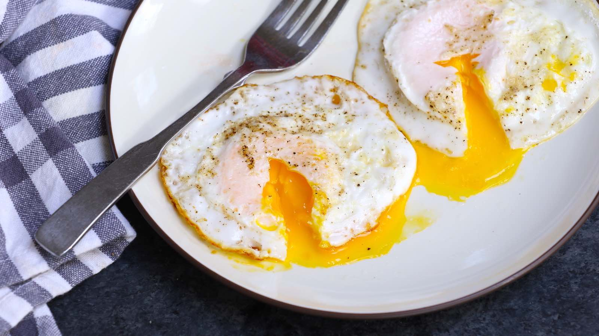

Eggs Over Medium

Description
Eggs cooked to perfection (i.e., runny center)!
Ingredients
- Eggs
- Salt and Pepper (Optional)
Steps
- Butter pan and set over medium heat.
- Crack eggs into pan.
- Sprinkle salt and pepper, to taste.
- Cook for 3-1/2 minutes.
- Flip, and cook for 2 minutes.